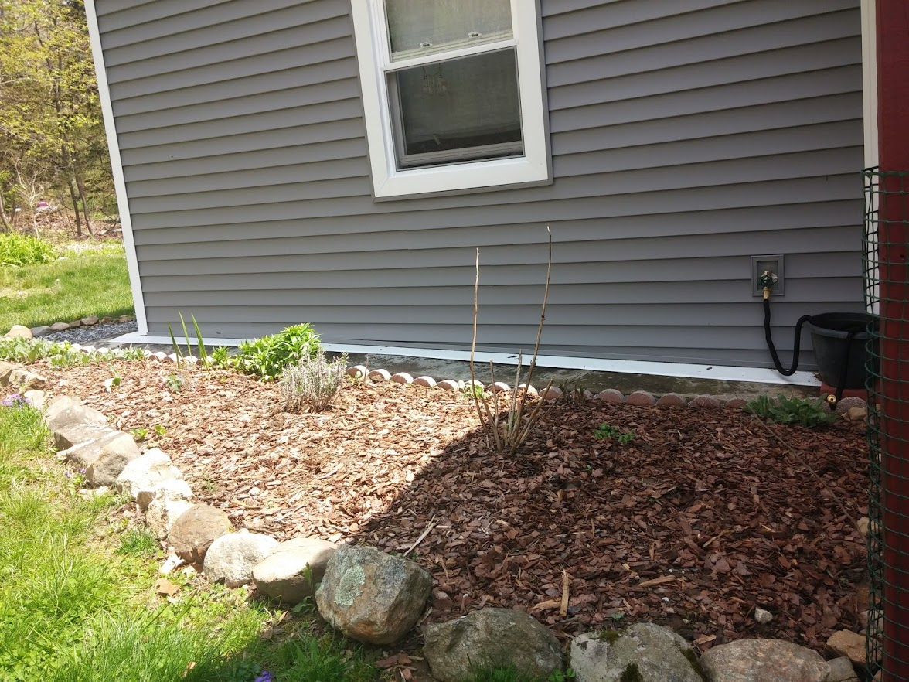
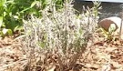
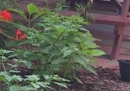
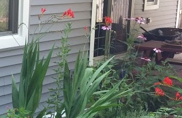
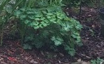
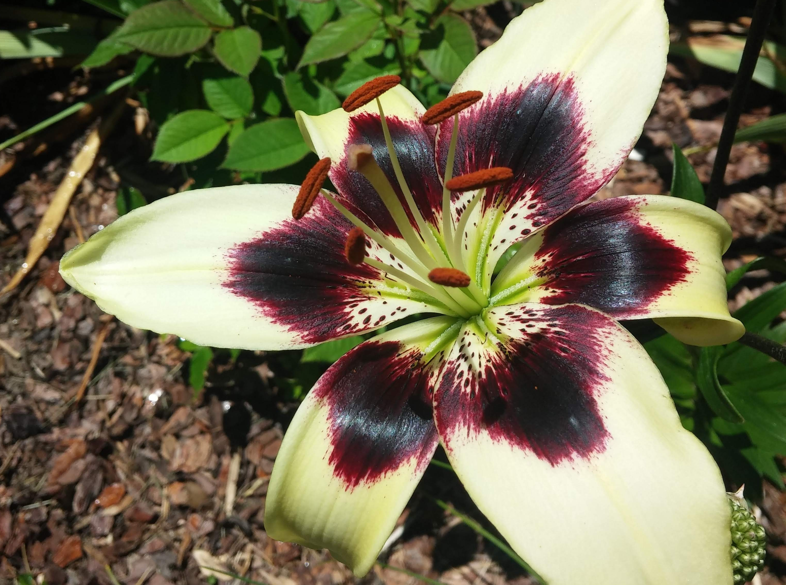

Lavender
- Blooms in the summer
- Deadhead when flowers fade
- No thinning necessay
- General fertilizer
- 
- Actually may help to keep away pests
- Just let it be
- For now only in this gaden
- For more info visit Lavender info
General Hydrangea Info
- Bloom in the summer
- Clip flowers after they fade, please check link for details on pruning
- No need to thin
- General fertilizer but acidic soil for blue and lime for pink
- 
- No known pests
- this plant may or may not bloom it has been moved several times
- Depending on soil type depends on flower color
- For more info visit Hydrangea info
General Coopertips Info
- Blooms in the summer
- Clip all foliage after flower fades.
- No need to thin at this point unless you want to
- General fertilizer
- 
- No known pests
- Tall plant with fun orange flowers, great for bouquets
- Located in back gardens
- For more info visit CooperTips/Croscosmia info
General Echinacea (Conflower) Info
- Blooms in the summer
- Clip all foliage after flower fades, deadhead occasionally
- Thin in spring and during season as flower speads
- General fertilizer

- Pests include deer, rabbits and ground hog
- Perenniel,tall and spread through gardens, good to naturalize the woods edge
- Located in various gardens with colors being pink/purple, and white mostly in front
- For more info visit coneflower info
General Columbine Info
- Blooms in the late spring
- Clip flowers when they fade
- No need to thin
- General fertilizer
- 
- No known pests
- Perenniel,low growing
- Located in back garden and on side woods with purple/white blooms
- For more info visit Columbine info
General Black-eye Susan Info
- Blooms mid Summer
- Deadhead regularly to promote new blooms
- Thin in spring and fall, these will take over the garden!
- General fertilizer

- Usually deer and ground hog likes these
- Perenniel,At the end of the flowering season,cut down to ground.
- Found everywhere in yard front and back
- For more info visit black-eyed Susan info
General lilly Info
- Blooms in the spring thru summer
- Clip all foliage after flower fades and leaves start to yellow<< /li>
- No thinning neccesary ,but they spread so you may want to
- General fertilizer
- 
- Pests may include deer and small red beetles, spray regularly with insectcide if you see them!!!
- Several varieties in most gardens and several shapes and colors
- The one pictured is in the front, mostly white and yellow in the back
- For more info visit lilly info